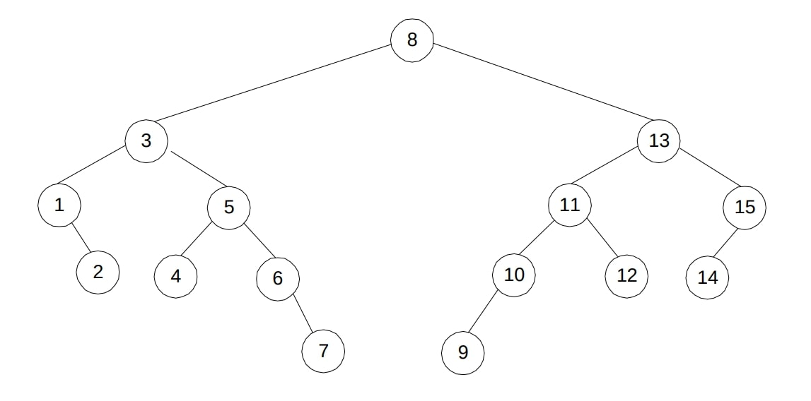

$\newcommand{\nfrac}[2]{\frac{\displaystyle{#1}}{\displaystyle{#2}}}$
Exercises
6.1.1
(a).
Hints
- Sort the array as a preprocessing step.
- Given a sorted array, and an adjacent pair $A[i],A[i+1]$, Could the distance between $A[i]$ and $A[j]$ where $j > i+1$, be strictly less?
- Use that to design your algorithm.
Solution
# input: Array of integers
# output: minimum distance between any pairs
def ClosestDistance(A[0..n-1])
# Transformation: Sort the array
A.sort()
# Initialize minimum distance to | A[0] - A[1] |
minDistance = abs( A[0] - A[1] )
# Iterate and compute the distance between adjacent elements
for i in 1..n-1:
currentDistance = | arr[i] - arr[i + 1] )
# Update the minimum distance if the current distance is smaller
if currentDistance < minDistance:
minDistance = currentDistance
# Return the minimum distance
return minDistance
(b). Homework.
6.1.2
Homework.
6.2.4
We ask students whether $\Theta(n^3) - \Theta(n^3) + \Theta(n^3) = \Theta(n^3)$.
Hints
- Try to given a counter example where coefficients cancel each other.
Solution
We show it is not true in general true by the counter example $T_1(n) = n^3$, $T_2(n) = 2 n^3$, and $T_3(n) = n^3$.
Analysis of the algorithm is left as a homework.
6.2.5
Homework.
6.3.5
(a)
Hints
- The idea is similar to binary search tree
Solution
# input: non-empty graph, by its root
# output: smallest element
def find_smallestKey(root):
node = root
while node.left is not None
current = current.left
return current.key
# input: non-empty graph, by its root
# output: largest element
def find_largestKey(root):
node = root
while node.right is not None:
node = node.right
return current.key
# input: non-empty graph, by its root
# output: difference between largest and smallest elements
def range(root)
return find_largestKey(root) - find_smallestKey(root)
Complexity is $2 \log n = \Theta( \log n )$
(b)
Hints
- For the largest, Note we can step down on left children. Similarly for the smallest, we can step down on right children.
Solution
False. Counter example from the solution manual.

6.3.9
Hints
- Very similar to binary search tree
Solution
Like the previous previous exercise we traverse left-most and right-most nodes. The difference is we consider left key and right key of these nodes, respectively.
def range(root)
leftMost = find_leftMostNode(root)
rightMost = find_rightMostNode(root)
return rightMost.rightKey - leftMost.leftKey
6.4.2
Homework.
6.4.5
Students will be given the following subroutines.
# input: heap as an array, node by its index
# output: None. Given heap is modified in-place
def siftUp(heap, index):
# cannot sift-up root node
while index > 0:
# parent of the node
parentIndex = (index - 1) // 2
# parental dominance is satisfied
if heap[index] <= heap[parentIndex]
break
# if not satisfied, swap with parent
swap(heap[index], heap[parentIndex])
# set the cursor to the parent, and repeat
index = parentIndex
# input: heap as an array, node by its index
# output: None. Given heap is modified in-place
def siftDown(heap, index):
# Children indices
leftChild_index = (2 * index) + 1
rightChild_index = (2 * index) + 2
# Find the largest out of index, leftChild_index, and rightChild_index
# Initially set
largest = index
# Check if the left child exists. if larger, update largest
if leftChild_index < len(heap) and heap[leftChild_index] > heap[largest]
largest = leftChild_index
# Check if the right child exists. if larger, update largest
if rightChild_index < len(heap) and heap[rightChild_index] > heap[largest]:
largest = rightChild_index
# If the largest element is one of the children.
if largest != index:
# swap the child with parent
swap( heap[index], heap[largest] )
# recursively heapify the smaller tree
siftDown(heap, largest)
# parental dominance is satisfied here, whether recursion is called or not, so we are done
return
(a). Homework.
Hints
- The approach is very similar to Maximum Key Deletion in Levitin.
Hint. Same logic of b but notably restrict search of the min element on leaves, $H[ \lfloor n/2 \rfloor + 1 ], \dots H[n]$. Also since the minimum is in leaves, we will only call \verb#siftUp#.
def delMin(heap H)
# find the minimum node's index in leaves
minElIndex = min(H[n/2 .. n])
# swap the minimum with last node
swapWithLast(minElIndex)
# remove the last node
removeLast()
# sift-up the node in the index, previously containing the minimum
siftUp(minElIndex )
(b).
Hints
- Use the element removal subroutine, given in the book. Call it
removeLast. - Use the swap with last indexed node trick, given in the book. Call it
swapWithLast.
Solution
def findElementIndex(heap, target)
for each element i of heap
if i == target
return i.index
def removeIndexNode(heap, index)
# swap the indexed node with the last node
swapWithLast(heap, index)
# remove the last node
removeLast(heap)
# One of them must terminate in constant time
siftDown(heap, index) # swapping downwards
siftUp(heap, index) # swapping upwards
def removeElementNode(heap, target)
# get the index of target by a linear scan
index = findElementIndex(heap, target)
# remove the element at found index
removeIndexNode(heap, index)
It is easy to verify, that one of siftDown and siftUp must terminate in $\mathcal{O}(1)$, given the structure properties of the heap.
Complexity is $\mathcal{O}(n) + \mathcal{O}(1) + \mathcal{O}(1) + \mathcal{O}(\log n) = \mathcal{O}(n)$, respectively, of findElementIndex and removeIndexNode.
6.5.1
Homework.
6.5.9
We ask students how to compute the binary representation of a given number n.
def binaryRepresentation(n)
# list storing binary representation
# b[i] corresponds to ith digit
binRep = []
# by definition we know left-most digit is not 0
# n becomes 0, only when last digit is computed
while n != 0
# fetch right-most digit
b = n mod 2
# eliminate right-most digit
n = floor( n/2 )
binRep.append(b)
return binRep
Finally we hint to them, algorithm RightToLeftBinaryExponentiation in page 238 can be modified, so that it does not require list b(n) as an input.
6.6.5
Homework.
6.6.6
Homework.
6.6.+
You are given an array of positive integers. Find the maximum element but without using > operator.
Hints
- Think of a related algorithm that uses < operator
- Is the knowledge of minimum element useful in anyway?
- What if we transformed all elements to their negation?
Solution
def negationOfArray(A[0..n-1])
for i in 0..n-1
A[i] = -(A[i])
def minElement(A[0..n-1])
minElement = A[0]
for i in 1..n-1
if A[i] < minElement
minElement = A[i]
return minElement
def maxElementByReduction(A[0..n-1])
# transform
negationOfArray(A)
# conquer
min = minElement(A)
# solve the main problem
return -(min)